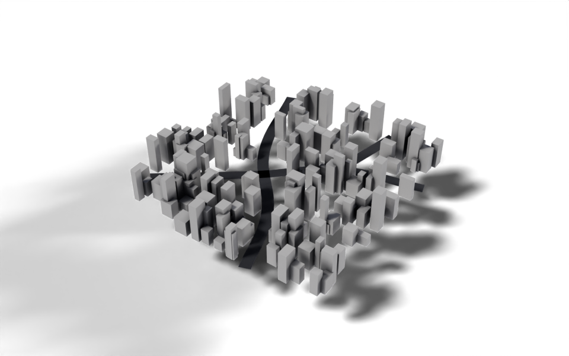

from nodebpy import geometry as g
from nodebpy import shader as s
with s.material("Asphalt") as asphalt:
(
s.PrincipledBSDF(base_color=(0.02, 0.02, 0.025, 1.0), roughness=0.8)
>> s.MaterialOutput()
)
with g.tree("City Builder", is_modifier=True) as tree:
roads = tree.inputs.geometry("Roads")
road_width = tree.inputs.float("Road Width", 0.25, min_value=0.0)
with tree.inputs.panel("City"):
size_x = tree.inputs.float("Size X", 5.0, min_value=0.0)
size_y = tree.inputs.float("Size Y", 5.0, min_value=0.0)
density = tree.inputs.float("Density", 10.0, min_value=0.0)
seed = tree.inputs.integer("Seed")
with tree.inputs.panel("Buildings"):
smallest = tree.inputs.vector("Size Min", (0.1, 0.1, 0.2))
largest = tree.inputs.vector("Size Max", (0.3, 0.3, 1.0))
material = tree.inputs.material("Material")
with g.Frame("Roads"):
half = road_width / 2
profile = g.CurveLine(start=g.CombineXYZ(x=-half), end=g.CombineXYZ(x=half))
road_mesh = (
roads
>> g.CurveToMesh(profile_curve=profile)
>> g.SetMaterial(material=asphalt.material)
)
with g.Frame("Building Lots"):
# scatter lots everywhere, then clear the ones that land on a road
road_points = g.CurveToPoints.evaluated(roads)
distance = g.GeometryProximity(road_points, target_element="POINTS").o.distance
lots = (
g.Grid(size_x, size_y)
>> g.DistributePointsOnFaces(density=density, seed=seed)
>> g.DeleteGeometry.point(selection=distance < road_width)
)
with g.Frame("Buildings"):
# move the cube up so it sits on the ground before it is scaled
block = (
g.Cube()
>> g.TransformGeometry(translation=(0, 0, 0.5))
>> g.SetMaterial(material=material)
)
size = g.RandomValue.vector(min=smallest, max=largest, seed=seed)
buildings = lots >> g.InstanceOnPoints(instance=block, scale=size)
g.JoinGeometry([road_mesh, buildings]) >> tree.outputs.geometry("City")City Builder
Geometry Script
curves
proximity
Draw roads with a curve and fill the space between them with buildings.

The modifier goes on a curve object: each spline is a road. Building lots are scattered over a grid, any lot too close to a road is removed, and a box of random size is placed on each lot that is left. Drawing a new road in Edit Mode clears a path through the city straight away.
How it works
- Roads. Curve to Mesh sweeps a straight profile, as wide as
Road Width, along every spline. The profile’s ends are built from the input withg.CombineXYZ(x=...), androad_width / 2is a Math node made by the/operator. - Lots. Distribute Points on Faces scatters points on a grid. Geometry Proximity measures how far each point is from the nearest point on the evaluated road curves, and
distance < road_widthcreates a Compare node whose result selects the points to delete. - Buildings. The cube is moved up by half its height first, so when it is scaled on a lot it grows upwards from the ground rather than in both directions. Random Value in vector mode gives each building its own footprint and height between
Size MinandSize Max. - Materials. The roads get an asphalt material created in the same script with
s.material. The buildings take theirs from theMaterialinput.
with tree.inputs.panel("City"): groups inputs into a collapsible panel in the modifier, and with g.Frame("Roads"): puts every node created in the block into a frame, so the tree’s layout follows the script’s structure.
Node tree
Original
Ported from the City Builder tutorial and City Builder.py in Geometry Script. The original yields the roads and buildings so they are joined automatically; here the two results are named variables passed to an explicit Join Geometry.